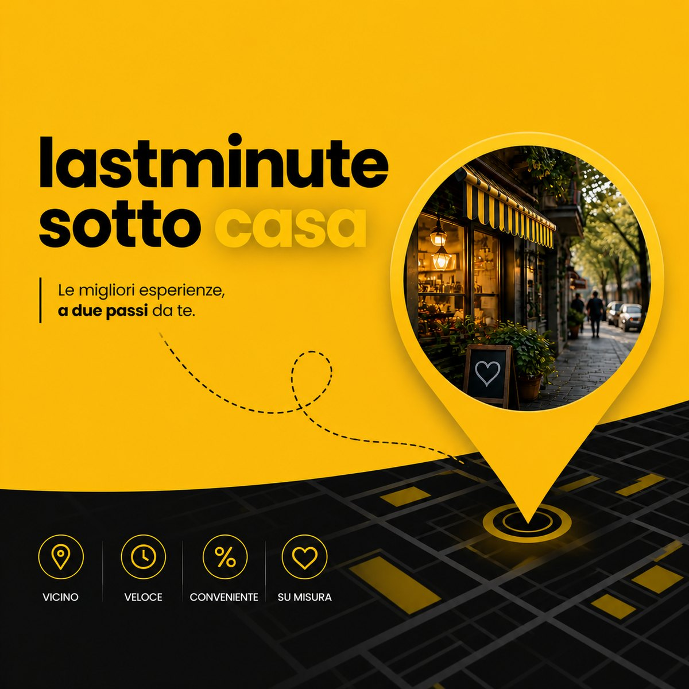
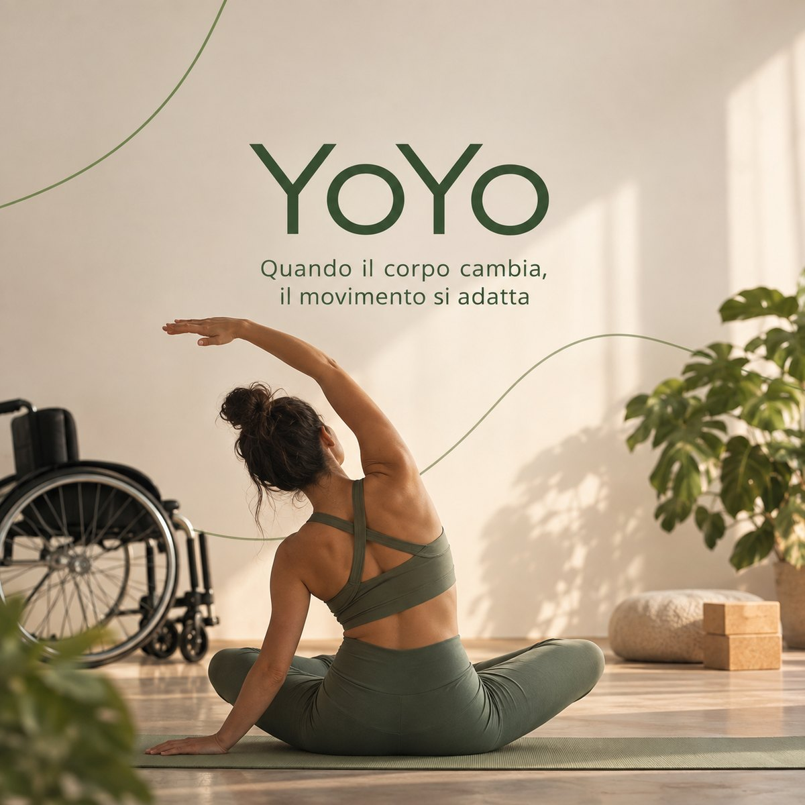
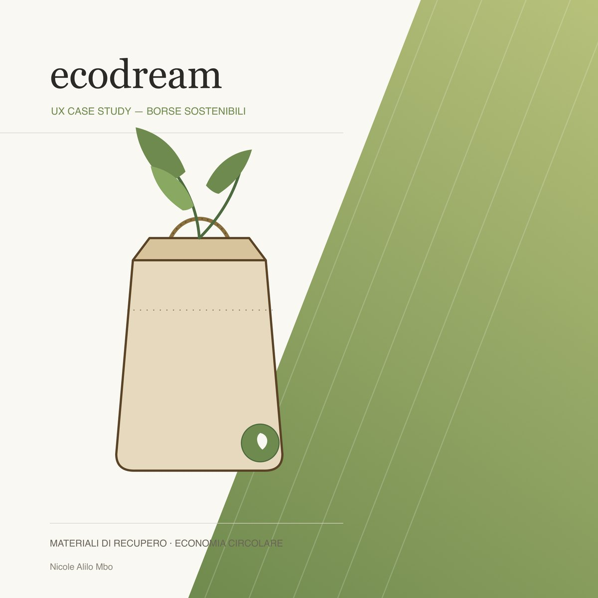

UX Analysis & Redesign
Last Minute Sotto Casa
Redesign della landing page di una piattaforma che permette ai negozi di prossimità di vendere prodotti invenduti o in scadenza a prezzo ridotto: analisi, insight UX e strategia di redesign.
UX Designer
Mi chiamo Nicole Alilo Mbo. Trasformo ricerca e dati in interfacce chiare, accessibili e utili.
Vedi i progettiSono una UX Designer con un background nel digital sales e nel marketing, esperienze che mi hanno permesso di sviluppare una visione trasversale del mondo digitale. Mi occupo di progettare esperienze intuitive e funzionali, combinando attenzione ai bisogni delle persone, capacità di analisi e obiettivi di business.
Credo nel valore di un design capace di semplificare le interazioni, risolvere problemi concreti e rendere i prodotti digitali più accessibili e significativi. Mi contraddistinguono curiosità, pensiero analitico e attenzione ai dettagli.

UX Analysis & Redesign
Redesign della landing page di una piattaforma che permette ai negozi di prossimità di vendere prodotti invenduti o in scadenza a prezzo ridotto: analisi, insight UX e strategia di redesign.
Progettazione grafica
Brand identity per un nuovo modo di viaggiare, consapevole e contro l'over-tourism: strategia di marca, identità, sistema visivo e applicazioni.

Copywriting
Blog post narrativo in prima persona per un progetto di yoga accessibile e adattivo: target, buyer persona, tone of voice, headline e principi di persuasione di Cialdini.

Discovery · Accessibilità · Wireframing · UI design
Progetto completo per un brand di borse e zaini sostenibili in materiali di recupero: discovery, analisi di accessibilità, wireframe desktop e mobile, design system e UI design.